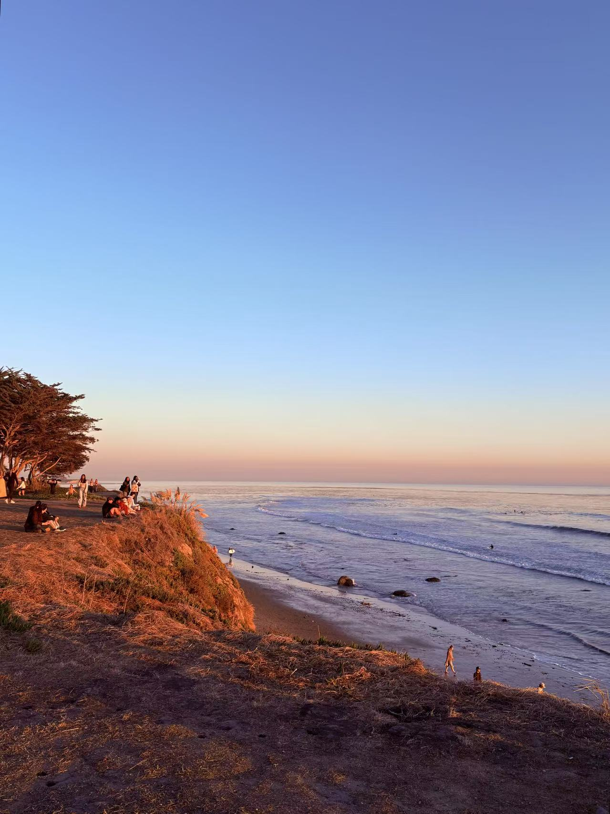

About Me
Hello! My name is Vivienne Lyu, and this is my website.

Who I Am
I am a graduate student at Cornell Tech, passionate about data science, AI, and product management.
My Interests
Data Science & AI
I enjoy building machine learning models and working with data to extract insights.
Machine Learning & Product Development
Currently exploring AI applications in product management.
Outdoor Activities: Hiking, Surfing, Sailing
I love exploring nature! Here’s a photo from my recent hikes:


Content Creation & Social Media
I create content about fashion, travel, and lifestyle.
Exploring New Coffee Shops
My favorite coffee shop recently has been "Olive and James".


Watching Sunsets
Nothing beats a beautiful sunset by the ocean.
Walking by the Beach
The beach is my happy place. Here’s a scenic shot:

What I Learned About the <details> Element
Click to learn more about the <details> element
I implemented the <details> element on my website to make my "My Interests" section more interactive.
This element allows me to hide additional content, such as descriptions and images, under a collapsible summary.
Users can click on the summary to reveal or hide the details, making the page cleaner and easier to navigate.
I also noticed that the <details> element has built-in functionality that doesn't require JavaScript,
which is convenient for creating interactive sections without extra coding.
New HTML Element I Explored
What I Learned About <details>
The <details> element is useful for creating expandable sections that hide or show content when clicked. This is great for keeping a webpage clean while still providing extra details for users who are interested.
For example, I used it to group my interests, and clicking each category expands to show related images and text. It makes my page more interactive without overwhelming the user with too much information at once.